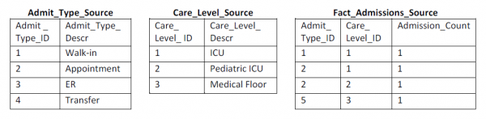

A junk dimension combines several low-cardinality flags and attributes into a single dimension table rather than modeling them as separate dimensions. There are good reasons to create this combined dimension, including reducing the size of the fact table and making the dimensional model easier to work with. Margy described junk dimensions in detail in Kimball Design Tip #48: De-Clutter with Junk (Dimensions). On a recent project, I addressed three aspects of junk dimension processing: building the initial dimension, incorporating it into the fact processing, and maintaining it over time.
Build the Initial Junk Dimension
If the cardinality of each attribute is relatively low, and there are only a few attributes, then the easiest way to create the dimension is to cross-join the source system lookup tables. This creates all possible combinations of attributes, even if they might never exist in the real world.
If the cross-join of the source tables is too big, or if you don’t have source lookup tables, you will need to build your junk dimension based on the actual attribute combinations found in the source data for the fact table. The resulting junk dimension is often significantly smaller because it includes only combinations that actually occur.
We’ll use a simple health care example to show both of these combination processes. Hospital admissions events often track several standalone attributes, including the admission type and level of care required, as illustrated below in the sample rows from the source system lookup and transaction tables.

The following SQL uses the cross-join technique to create all 12 combinations of rows (4×3) from these two source tables and assign unique surrogate keys.
SELECT ROW_NUMBER() OVER( ORDER BY Admit_Type_ID, Care_Level_ID) AS
Admission_Info_Key,
Admit_Type_ID, Admit_Type_Descr, Care_Level_ID, Care_Level_Descr
FROM Admit_Type_Source
CROSS JOIN Care_Level_Source;
In the second case, when the cross-join would yield too many rows, you can create the combined dimension based on actual combinations found in the transaction fact records. The following SQL uses outer joins to prevent a violation of referential integrity when a new value shows up in a fact source row that is not in the lookup table.
SELECT ROW_NUMBER() OVER(ORDER BY F.Admit_Type_ID) AS
Admission_Info_Key,
F.Admit_Type_ID, ISNULL(Admit_Type_Descr, ‘Missing Description’)
Admit_Type_Descr,
F.Care_Level_ID, ISNULL(Care_Level_Descr, ‘Missing Description’)
Care_Level_Descr — substitute NVL() for ISNULL() in Oracle
FROM Fact_Admissions_Source F
LEFT OUTER JOIN Admit_Type_Source C ON
F.Admit_Type_ID = C.Admit_Type_ID
LEFT OUTER JOIN Care_Level_Source P ON
F.Care_Level_ID = P.Care_Level_ID;
Our example Fact_Admissions_Source table only has four rows which result in the following Admissions_Info junk dimension. Note the Missing Description entry in row 4.
Incorporate the Junk Dimension into the Fact Row Process
Once the junk dimension is in place, you will use it to look up the surrogate key that corresponds to the combination of attributes found in each fact table source row. Some of the ETL tools do not support a multi-column lookup join, so you may need to create a work-around. In SQL, the lookup query would be similar to the second set of code above, but it would join to the junk dimension and return the surrogate key rather than joining to the lookup tables.
Maintain the Junk Dimension
You will need to check for new combinations of attributes every time you load the dimension. You could apply the second set of SQL code to the incremental fact rows and select out only the new rows to be appended to the junk dimension as shown below.
SELECT * FROM ( {Select statement from second SQL code listing} ) TabA
WHERE TabA.Care_Level_Descr = ‘Missing Description’
OR TabA.Admit_Type_Descr = ‘Missing Description’ ;
In this example, it would select out row 4 in the junk dimension. Identifying new combinations could be done as part of the fact table surrogate key substitution process, or as a separate dimension processing step prior to the fact table process. In either case, your ETL system should raise a flag and notify the appropriate data steward if it identifies a missing entry.
There are a lot of variations on this approach depending on the size of your junk dimension, the sources you have, and the integrity of their data, but these examples should get you started. Send me an email if you’d like a copy of the code to create this example in SQL Server or Oracle.